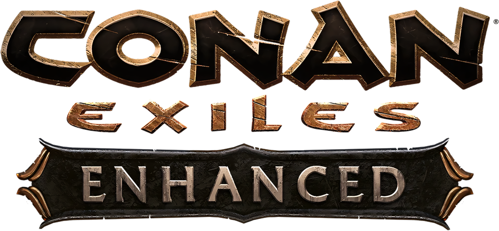
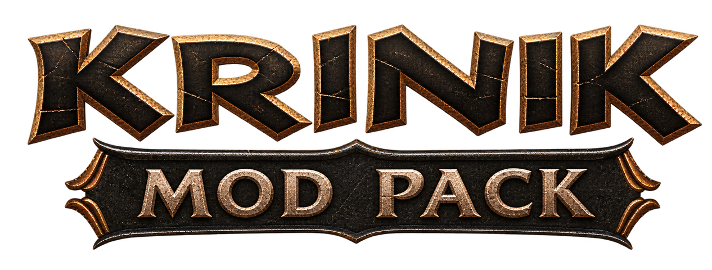

<!doctype html>
<html lang="ru">
<head>
<meta charset="utf-8">
<title>KrinikConanLauncher — состояния самостоятельного лаунчера</title>
<!-- Макеты лаунчера для KUIPS (KUMM plans/57): лаунчер без скачанной сборки сам ищет игру на дисках, сам видит файлы последнего выпуска на GitHub,
     сам качает их под найденную версию игры и показывает каждый процесс полосой прогресса с процентами, а скачивание — ещё скоростью, оставшимся
     и прошедшим временем (`[OWNER]` 2026-11-18 08:18–08:22, verbatim — KUMM PROJECT_HISTORY.md, entry 2026-11-18 08:11).
     Окно — по макету 11 (../mockups/mockups.html, .v11), с которого KrinikConanLauncher.cs рисовался в тех же логических пикселях, плюс то, что
     появилось в лаунчере позже: версии под логотипами и «Что нового», «Руководство», ссылка на GitHub, строка «Лаунчер: 1.0.0» под кнопками окна.
     Каждое окно — [data-screen="<id>"] 960×540; `kuips shoot` снимает их по одному. Числа на макетах — пример, не замер. [NOT-TESTED] -->
<style>
  @font-face { font-family: Oswald; src: url("../mockups/fonts/Oswald[wght].ttf"); font-weight: 200 700; }
  @font-face { font-family: Inter; src: url("../mockups/fonts/Inter[opsz,wght].ttf"); font-weight: 100 900; }
  * { box-sizing: border-box; margin: 0; padding: 0; }
  body { background: #222; padding: 40px; display: flex; flex-wrap: wrap; gap: 40px; font-family: Inter, "Segoe UI", sans-serif; color: #f7ecd6; }
  .win { position: relative; width: 960px; height: 540px; overflow: hidden; background: #000 url(../res/wallpaper.jpg) center / cover no-repeat; }
  .win * { position: relative; }
  .sh { text-shadow: 0 1px 2px #000, 0 0 6px rgba(0,0,0,.85); }
  a { color: #f2c977; text-decoration: underline; text-underline-offset: 2px; }
  /* Затемнение под текстом — как в макете 11. */
  .win::before { content: ""; position: absolute; inset: 0; pointer-events: none;
                 background: linear-gradient(180deg, rgba(6,4,2,.78) 0%, rgba(6,4,2,.35) 22%, rgba(6,4,2,0) 34%),
                             linear-gradient(180deg, rgba(6,4,2,0) 62%, rgba(6,4,2,.82) 100%),
                             linear-gradient(270deg, rgba(6,4,2,.82) 0%, rgba(6,4,2,.55) 26%, rgba(6,4,2,0) 40%); }
  /* Кайма — те же полосы res/frame_*.png, что встроены в лаунчер, 3 px. */
  .frame { position: absolute; inset: 0; z-index: 6; pointer-events: none; }
  .frame i { position: absolute; --b: 3px; }
  .frame .t, .frame .b { left: 0; right: 0; height: var(--b); background: url(../res/frame_h.png) 0 0 / 100% 100%; z-index: 2; }
  .frame .t { top: 0; } .frame .b { bottom: 0; transform: scale(-1, -1); filter: brightness(.82); }
  .frame .l, .frame .r { top: 0; bottom: 0; width: var(--b); background: url(../res/frame_v.png) 0 0 / 100% 100%; z-index: 1; }
  .frame .l { left: 0; } .frame .r { right: 0; transform: scale(-1, -1); filter: brightness(.86); }
  /* Металлическая табличка кнопки (Metal.Plaque). */
  .pl { --c: 6px; padding: 2.5px; background: linear-gradient(180deg, #f7e2a6 0%, #d9a352 30%, #a1622a 60%, #5e3411 86%, #b47a3c 100%);
        clip-path: polygon(var(--c) 0, calc(100% - var(--c)) 0, 100% var(--c), 100% calc(100% - var(--c)), calc(100% - var(--c)) 100%, var(--c) 100%, 0 calc(100% - var(--c)), 0 var(--c)); }
  .pl > span { height: 100%; display: grid; place-items: center; --d: 4.5px; background: linear-gradient(180deg, #3b2e21, #161009); box-shadow: inset 0 1px 0 rgba(255,232,180,.27);
        clip-path: polygon(var(--d) 0, calc(100% - var(--d)) 0, 100% var(--d), 100% calc(100% - var(--d)), calc(100% - var(--d)) 100%, var(--d) 100%, 0 calc(100% - var(--d)), 0 var(--d));
        font: 700 18.7px Georgia; color: #f6e4bc; text-shadow: 1px 1px 0 #000; text-align: center; }
  .caps { position: absolute; top: 18px; right: 20px; display: flex; gap: 6px; z-index: 7; }
  .caps .pl { width: 38px; height: 28px; }
  .caps svg { width: 14px; height: 14px; fill: none; stroke: url(#glyph); stroke-width: 2.2; stroke-linecap: round; }
  /* «Лаунчер: 1.0.0» — по центру под парой кнопок окна (08:13, 08:20); 10:16 — ниже (зазор 6 → 14 px) и в плашке; 10:33 — плашка тем же
     металлом, что кнопки окна: компонент .pl (рубленые углы, золотой кант, тёмная заливка), не уже пары кнопок, по центру под ней;
     10:36 — цвета приглушены, чтобы плашка не походила на кнопку: тусклый кант невыбранной строки списка копий (.pick), тоньше, без блика
     сверху и без чёрной тени у текста. */
  /* Выбор языка (`[OWNER]` 2026-11-18 15:08): слева от блока «кнопки окна + плашка версии», на высоте кнопок окна. 15:55 — выпадающим списком,
     так как языков будет много: закрытое поле показывает код текущего языка и стрелку; список раскрывается вниз от поля, поверх окна, каждый
     язык назван на нём самом. Первый запуск — язык Windows, выбор игрока лаунчер запоминает (KUMM plans/57, критерии 10–11). */
  .lang { position: absolute; top: 18px; right: 110px; z-index: 7; }
  .lang .pl { height: 28px; }
  .lang .pl > span { display: flex; align-items: center; gap: 7px; padding: 0 10px 0 12px; font: 700 13px Cambria, Georgia, serif; letter-spacing: .04em; }
  .lang .pl > span svg { width: 10px; height: 10px; fill: none; stroke: url(#glyph); stroke-width: 2.2; stroke-linecap: round; stroke-linejoin: round; }
  .lang.open .pl { background: linear-gradient(180deg, #ffe7a8 0%, #f2b85a 48%, #c97a2c 100%); }
  .langlist { position: absolute; top: 50px; right: 110px; z-index: 9; width: 176px; --c: 6px; padding: 2.5px;
              background: linear-gradient(180deg, #f7e2a6 0%, #d9a352 30%, #a1622a 60%, #5e3411 86%, #b47a3c 100%);
              clip-path: polygon(var(--c) 0, calc(100% - var(--c)) 0, 100% var(--c), 100% calc(100% - var(--c)), calc(100% - var(--c)) 100%, var(--c) 100%, 0 calc(100% - var(--c)), 0 var(--c));
              filter: drop-shadow(0 8px 18px rgba(0,0,0,.75)); }
  .langlist > div { background: linear-gradient(180deg, #2c2218, #120d08); padding: 4px 0;
              clip-path: polygon(4.5px 0, calc(100% - 4.5px) 0, 100% 4.5px, 100% calc(100% - 4.5px), calc(100% - 4.5px) 100%, 4.5px 100%, 0 calc(100% - 4.5px), 0 4.5px); }
  .langlist .item { display: flex; justify-content: space-between; align-items: center; padding: 8px 14px; font: 14px Inter; color: #e2d4ba; }
  .langlist .item em { font: 700 12px Cambria, Georgia, serif; font-style: normal; color: #b49a74; letter-spacing: .04em; }
  .langlist .item.on { background: linear-gradient(90deg, rgba(242,185,90,.26), rgba(242,185,90,.08)); box-shadow: inset 3px 0 0 #f2b85a; color: #f7ecd6; }
  .lver { position: absolute; top: 60px; right: 20px; width: 82px; display: flex; justify-content: center; z-index: 7; }
  .lver .pl { --c: 5px; padding: 1.5px; height: 20px; min-width: 82px; flex: none; background: linear-gradient(180deg, #8a6a40, #4a3018); }
  .lver .pl > span { --d: 4px; padding: 0 7px; font: 11px/1 Inter; color: #d2c4a6; white-space: nowrap; text-shadow: none; box-shadow: none;
    background: linear-gradient(180deg, #2a2118, #15100a); }
  /* Шапка: логотипы и заголовок в ряд; версия под каждым логотипом и «Что нового» под ней. */
  .top { position: absolute; top: 24px; left: 30px; display: flex; align-items: center; gap: 18px; z-index: 3; }
  .lg { display: flex; flex-direction: column; align-items: center; }
  .lg img { display: block; }
  .lg.g img { height: 54px; } .lg.p img { height: 50px; }
  .lg .v { position: absolute; top: calc(100% + 1px); left: 50%; transform: translateX(-50%); display: flex; flex-direction: column; align-items: center; gap: 5px; }
  .lg .v b { font: 700 13px Cambria, Georgia, serif; letter-spacing: .04em; color: #e9d5c1; white-space: nowrap; }
  .lg .v .pl { height: 24px; } .lg .v .pl > span { font-size: 12.5px; padding: 0 10px; white-space: nowrap; }
  .lg.g .v { top: calc(100% + 0px); } .lg.p .v { top: calc(100% + 4px); }
  .titles h1 { font: 600 25px/1.1 Oswald; letter-spacing: .02em; margin-left: 6px; }
  .titles h2 { text-align: center; font: 500 17px Oswald; color: #ffd27e; letter-spacing: .1em; text-transform: uppercase; margin-top: 3px; }
  /* Столбик справа: главная золотая кнопка — наверху, на постоянном месте; под ней всё место — состоянию (список, полоса прогресса, «Отменить»);
     «Руководство», «Отзыв», «Удалить сборку» — внизу (`[OWNER]` 2026-11-18 08:41 «CTA перенести ВВЕРХ колонки» · «всё место … чем хочешь, тем и занимай»). */
  .col { position: absolute; right: 30px; top: 118px; bottom: 28px; width: 270px; display: flex; flex-direction: column; gap: 9px; z-index: 3; }
  .col .low { margin-top: auto; display: flex; flex-direction: column; gap: 9px; }
  .col .pl { height: 44px; }
  .col > .pl.gold { height: 70px; filter: drop-shadow(0 6px 16px rgba(242,150,60,.4)); }
  .col > .pl.gold > span { font-size: 28px; letter-spacing: .06em; color: #2a1606; text-shadow: 0 1px 0 rgba(255,244,214,.7);
        background: linear-gradient(180deg, #ffe7a8 0%, #f2b85a 48%, #c97a2c 100%); box-shadow: inset 0 1px 0 #fff3c9; }
  .col > .pl.gold.long > span { font-size: 22px; }
  .col > .pl.off { opacity: .45; filter: none; }
  .col .status { font: 12px/1.21 Inter; color: #e2d4ba; margin-top: 10px; }
  .col .status b { font-weight: 600; color: #f7ecd6; }
  .col .status .warn { color: #ffcf8a; }
  /* Состояние — списком: точка, подпись, значение; перенос висит под значением (`[OWNER]` 2026-11-18 08:39 «более структурно, по пунктам»). */
  /* Сетка из трёх столбцов: точка · подпись · значение; значения всех строк начинаются на одной вертикали, цифры моноширинные (tabular-nums),
     чтобы меняющиеся числа не двигали строку (08:44 «Все метрики в колонку на своих строках, чтобы НЕ ПРЫГАЛИ … равнение по левому краю»). */
  .st { display: grid; grid-template-columns: 8px max-content 1fr; column-gap: 6px; row-gap: 3px; font: 12px/1.25 Inter; color: #e2d4ba;
        font-variant-numeric: tabular-nums; }
  .st i { font-style: normal; color: #f2b85a; } .st i::before { content: "•"; }
  .st b { font-weight: 600; color: #f7ecd6; white-space: nowrap; }
  .st .wide { grid-column: 2 / 4; }
  .st span { min-width: 0; overflow-wrap: break-word; }   /* путь переносится после «\» (<wbr>), слишком длинное имя папки — по краю колонки */
  .st .warn { color: #ffcf8a; }
  .col > .st { margin-top: 4px; }
  .col > .prog { margin-top: 2px; }
  .prog .st { margin-top: 1px; font-size: 11.5px; }
  /* Полоса прогресса в цветах Conan: тёмный жёлоб в металлической окантовке, золотая заливка как лицо «Играть», проценты по центру. */
  .prog { margin-top: 10px; display: flex; flex-direction: column; gap: 6px; }
  /* Строки с числами — Cambria Bold: у Georgia цифры старого стиля, лаунчер пишет версии Cambria (VersionFont). */
  .prog .what { font: 700 14.5px Cambria, Georgia, serif; color: #f6e4bc; text-shadow: 1px 1px 0 #000; }
  .bar { --c: 5px; height: 26px; padding: 2px; background: linear-gradient(180deg, #f7e2a6 0%, #d9a352 30%, #a1622a 60%, #5e3411 86%, #b47a3c 100%);
         clip-path: polygon(var(--c) 0, calc(100% - var(--c)) 0, 100% var(--c), 100% calc(100% - var(--c)), calc(100% - var(--c)) 100%, var(--c) 100%, 0 calc(100% - var(--c)), 0 var(--c)); }
  .bar > i { position: absolute; inset: 2px; background: linear-gradient(180deg, #0b0805, #1f170e); box-shadow: inset 0 2px 4px rgba(0,0,0,.8); }
  .bar > em { position: absolute; left: 2px; top: 2px; bottom: 2px; width: calc((100% - 4px) * var(--p) / 100);
              background: linear-gradient(180deg, #ffe7a8 0%, #f2b85a 48%, #c97a2c 100%); box-shadow: inset 0 1px 0 #fff3c9, 0 0 10px rgba(242,150,60,.55); }
  .bar > b { position: absolute; inset: 0; display: grid; place-items: center; font: 700 14.5px Cambria, Georgia, serif; color: #fff4dc;
             text-shadow: 0 0 3px #000, 1px 1px 0 #000, -1px -1px 0 #000, 1px -1px 0 #000, -1px 1px 0 #000; }
  .prog .meta { font: 11.5px/1.35 Inter; color: #e2d4ba; }
  .prog .meta span { white-space: nowrap; }
  /* Выбор копии игры: строки-таблички, выбранная — с золотой окантовкой. */
  .pick { margin-top: 6px; display: flex; flex-direction: column; gap: 6px; }
  .pick .pl { height: auto; }
  .pick .pl > span { display: block; text-align: left; padding: 7px 10px 7px 30px; font: 12px/1.3 Inter; color: #e2d4ba; text-shadow: none; }
  .pick .pl > span b { display: block; text-align: left; font: 700 13.5px Cambria, Georgia, serif; color: #f6e4bc; }
  .pick .pl > span::before { content: ""; position: absolute; left: 10px; top: 10px; width: 10px; height: 10px; border-radius: 50%; border: 1.5px solid #d9a352; }
  .pick .pl.on > span::before { background: radial-gradient(circle, #ffe7a8 0 35%, transparent 40%); }
  .pick .pl:not(.on) { background: linear-gradient(180deg, #8a6a40, #4a3018); }
  /* Выбор копии — модальное окно поверх лаунчера: копий может найтись сколько угодно, список прокручивается (`[OWNER]` 2026-11-18 08:37). */
  .modal-dim { position: absolute; inset: 0; z-index: 8; background: rgba(6,4,2,.66); }
  .modal { position: absolute; z-index: 9; left: 50%; top: 50%; width: 640px; transform: translate(-50%, -50%); --c: 8px; padding: 3px;
           background: linear-gradient(180deg, #f7e2a6 0%, #d9a352 30%, #a1622a 60%, #5e3411 86%, #b47a3c 100%);
           clip-path: polygon(var(--c) 0, calc(100% - var(--c)) 0, 100% var(--c), 100% calc(100% - var(--c)), calc(100% - var(--c)) 100%, var(--c) 100%, 0 calc(100% - var(--c)), 0 var(--c));
           filter: drop-shadow(0 12px 30px rgba(0,0,0,.8)); }
  .modal > div { background: linear-gradient(180deg, #2c2218, #120d08); padding: 18px 22px 18px; display: flex; flex-direction: column; gap: 10px;
           clip-path: polygon(6px 0, calc(100% - 6px) 0, 100% 6px, 100% calc(100% - 6px), calc(100% - 6px) 100%, 6px 100%, 0 calc(100% - 6px), 0 6px); }
  .modal h3 { font: 700 21px Georgia; color: #ffd27e; text-shadow: 1px 1px 0 #000; }
  .modal h3 b { font-family: Cambria, Georgia, serif; }
  .modal p { font: 13px/1.35 Inter; color: #e2d4ba; }
  .modal .list { height: 236px; overflow: hidden; border: 1px solid rgba(201,138,68,.55); background: rgba(0,0,0,.35); display: flex; }
  .modal .rows { flex: 1; display: flex; flex-direction: column; }
  .modal .row { display: grid; grid-template-columns: 26px 1fr; align-items: start; padding: 9px 12px; border-bottom: 1px solid rgba(201,138,68,.25); }
  .modal .row.on { background: linear-gradient(90deg, rgba(242,185,90,.26), rgba(242,185,90,.08)); box-shadow: inset 3px 0 0 #f2b85a; }
  .modal .row i { width: 12px; height: 12px; margin-top: 3px; border-radius: 50%; border: 1.5px solid #d9a352; }
  .modal .row.on i { background: radial-gradient(circle, #ffe7a8 0 38%, transparent 44%); }
  .modal .row b { display: block; font: 700 14.5px Cambria, Georgia, serif; color: #f6e4bc; text-align: left; }
  .modal .row b em { font-style: normal; font-weight: 400; color: #d9bf94; }
  .modal .row span { display: block; font: 12px Inter; color: #cdbfa6; text-align: left; }
  .modal .sb { width: 10px; background: rgba(0,0,0,.4); border-left: 1px solid rgba(201,138,68,.3); }
  .modal .sb s { position: absolute; left: 2px; right: 2px; top: 4px; height: 62%; background: linear-gradient(90deg, #d9a352, #8a5a2a); border-radius: 3px; }
  .modal .btns { display: flex; justify-content: flex-end; gap: 10px; margin-top: 4px; }
  .modal .btns .pl { height: 44px; width: 210px; }
  .modal .btns .pl.gold > span { color: #2a1606; text-shadow: 0 1px 0 rgba(255,244,214,.7); background: linear-gradient(180deg, #ffe7a8 0%, #f2b85a 48%, #c97a2c 100%); box-shadow: inset 0 1px 0 #fff3c9; }
  .modal .btns .pl.cancel { width: 150px; }
  /* Плашка обновлений слева под шапкой (она есть в лаунчере с 2026-11-17). */
  /* Плашка: рамка — тот же металл, что у кнопок, 3 px; фон светлее (08:43 «более толстую рамку, менее тёмный фон»); золотая кнопка по центру
     («CTA ЦЕНТРИРУЙ» · «CTA об обновлении ЗОЛОТОЙ»). */
  /* 10:06: фон темнее, контур — тот же рубленый металл, что кайма окна (res/frame_*.png, класс .frame внутри плашки). */
  .plate { position: absolute; left: 30px; top: 136px; width: 300px; padding: 15px 18px 16px; z-index: 3; background: rgba(12,8,4,.74);
           box-shadow: 0 6px 18px rgba(0,0,0,.5); display: flex; flex-direction: column; align-items: center; gap: 10px; }
  .plate .frame { z-index: 0; } .plate .frame i { --b: 3px; }
  .plate p { font: 13px/1.35 Inter; color: #f2e6cf; text-align: center; }
  .plate p b { color: #ffd27e; }
  .plate .pl { height: 40px; width: 220px; }
  .plate .pl.gold { filter: drop-shadow(0 4px 12px rgba(242,150,60,.4)); }
  .plate .pl.gold > span { font-size: 17px; color: #2a1606; text-shadow: 0 1px 0 rgba(255,244,214,.7);
           background: linear-gradient(180deg, #ffe7a8 0%, #f2b85a 48%, #c97a2c 100%); box-shadow: inset 0 1px 0 #fff3c9; }
  /* 2026-11-20 11:38 (`[OWNER]`, KUMM plan 57 «замечания 2026-11-20» п. 2): список ссылок внизу слева стал кнопкой «О проекте»; она открывает плашку
     поверх лаунчера, как выбор копии игры, и в плашке стоят авторство и раздел «Ссылки» (HOUSE_RULES 22: раздел ссылок, без слова «контакты»). */
  .about { position: absolute; left: 30px; bottom: 26px; z-index: 3; }
  .about .pl { height: 36px; width: 170px; }
  /* Метка статуса на макете (HOUSE_RULES 23): у нового элемента — «нет механики — будет сделано»; всё остальное в окне работает. */
  .tag { position: absolute; z-index: 12; padding: 2px 7px; font: 700 10.5px Inter; color: #1d1206; background: #f2c36a; border-radius: 3px;
         box-shadow: 0 1px 4px rgba(0,0,0,.6); white-space: nowrap; }
  .about .tag { left: 0; bottom: 42px; }
  .modal.aboutbox { width: 600px; }
  .modal.aboutbox h4 { font: 700 15px Georgia; color: #f2c36a; margin-top: 2px; }
  .modal.aboutbox .lnk { display: grid; grid-template-columns: max-content 1fr; column-gap: 8px; row-gap: 4px; font: 13px/1.35 Inter; color: #e2d4ba; }
  .modal.aboutbox .lnk b { font-weight: 400; color: #cdbfa6; }
  .modal.aboutbox .lnk a { color: #ffd27e; text-decoration: underline; text-underline-offset: 2px; }
  .modal.aboutbox .lic { font: 12px/1.35 Inter; color: #cdbfa6; }
  .modal.aboutbox .btns .pl.gold { width: 170px; }
  .modal.aboutbox .tag { right: 18px; top: 14px; }
</style>
</head>
<body>
<svg width="0" height="0" style="position:absolute">
  <defs><linearGradient id="glyph" gradientUnits="userSpaceOnUse" x1="0" y1="1" x2="0" y2="13"><stop offset="0" stop-color="#fbe9b6"/><stop offset="1" stop-color="#c98a44"/></linearGradient></defs>
</svg>
<div id="all"></div>
<script>
  // Одно окно лаунчера: общая рамка, шапка и ссылки; меняется только столбик справа (и плашка обновлений).
  const STEAM = 'C:\\Program Files (x86)\\Steam\\steamapps\\common\\Conan Exiles'
  const btn = t => `<div class="pl"><span>${t}</span></div>`
  const gold = (t, extra = '') => `<div class="pl gold ${t.length > 8 ? 'long' : ''} ${extra}"><span>${t}</span></div>`
  const status = html => `<div class="status sh">${html}</div>`
  // Список состояния: [подпись, значение, класс]; подпись пустая — строка без подписи.
  const st = items => `<div class="st sh">${items.map(([k, v, c = '']) =>
    k ? `<i></i><b class="${c}">${k}:</b><span class="${c}">${v}</span>` : `<i></i><span class="wide ${c}">${v}</span>`).join('')}</div>`
  const bar = (p, what, meta) => `<div class="prog"><div class="what">${what}</div><div class="bar" style="--p:${p}"><i></i><em></em><b>${p} %</b></div>${meta ? st(meta) : ''}</div>`
  // Папка и версия игры — две величины, каждая на своей строке (2026-11-18 15:1x, русский язык макетов по слову владельца 15:03).
  // Путь переносится только после «\», чтобы имя папки не рвалось посреди слова («steamapps\c» / «ommon»).
  const path = p => p.replace(/\\/g, '\\<wbr>')
  const game = (v = '3.1.1') => [['Папка игры', path(STEAM)], ['Версия игры', v]]
  // Низ колонки: «Руководство», «Отзыв» и то, что добавляет состояние («Удалить сборку»).
  const low = (...more) => `<div class="low">${[btn('Руководство'), btn('Отзыв'), ...more].join('')}</div>`
  // Колонка сверху вниз: золотая главная (если есть) · состояние списком или полоса прогресса · низ.
  const SCREENS = {
    search: [bar(60, 'Поиск игры на дисках', [['Проверено дисков', '2 из 3'], ['Сейчас проверяется', 'диск D']]), low()],
    // Под модальным окном — лаунчер в том состоянии, из которого его открыли: поиск закончен.
    choose: [gold('Установить сборку', 'off'), st([['Поиск игры', 'закончен'], ['Найдено копий', '5']]), low()],
    notfound: [gold('Указать папку игры'), st([['', 'Лаунчер не нашёл игру ни&nbsp;в&nbsp;библиотеках Steam, ни&nbsp;в&nbsp;папках Games на&nbsp;дисках, ни&nbsp;в&nbsp;Program Files.', 'warn'],
      ['', 'Если игра установлена в другой папке, нажмите «Указать папку игры» и выберите эту папку.']]), low()],
    'found-files': [gold('Установить сборку'), st([...game(), ['Сборка', '0.9.1 для игры 3.1.1'], ['Файлы сборки', 'уже лежат рядом с&nbsp;лаунчером']]), low()],
    'found-nofiles': [gold('Установить сборку'), st([...game(), ['Сборка', '0.9.1 для игры 3.1.1'], ['Файлы сборки', 'лаунчер скачает с GitHub'],
      ['Нужно скачать', '6,8 ГБ']]), low()],
    download: [bar(37, 'Скачивание сборки 0.9.1',
      [['Скачано', '2,5 из 6,8 ГБ'], ['Скорость', '18,4 МБ/с'], ['Осталось времени', '3 мин 55 с'], ['Прошло времени', '2 мин 16 с']]), btn('Остановить'), low()],
    neterror: [gold('Продолжить скачивание'), st([['', 'Связь с GitHub прервалась, и скачивание остановилось.', 'warn'], ['Скачано', '2,5 из 6,8 ГБ'],
      ['', 'Лаунчер сохранил скачанные файлы и докачает только недостающие.']]), low()],
    install: [bar(64, 'Установка сборки 0.9.1', [['Скопировано модов', '46 из 72'], ['Прошло времени', '41 с'], ['', 'Не закрывайте лаунчер, пока идёт установка.']]), low()],
    // 10:18–10:19: на установленной сборке списка состояния нет — версии игры и сборки уже стоят под логотипами, путь отвлекает игрока.
    installed: [gold('Играть'), low(btn('Удалить сборку'))],
    noversion: [st([...game('3.2.0'), ['', 'Сборка для игры 3.2.0 ещё не вышла.', 'warn'], ['Последняя сборка', '0.9.1 для игры 3.1.1']]), low()],
    update: [gold('Играть'), low(btn('Удалить сборку'))],
    // 15:55: выбор языка — раскрытый список поверх установленной сборки.
    language: [gold('Играть'), low(btn('Удалить сборку'))],
    // 2026-11-20: плашка «О проекте» открыта поверх установленной сборки.
    about: [gold('Играть'), low(btn('Удалить сборку'))],
    updating: [bar(22, 'Обновление сборки до 0.9.2',
      [['Скачано', '0,4 из 1,9 ГБ'], ['Скорость', '21,0 МБ/с'], ['Осталось времени', '1 мин 13 с'], ['Прошло времени', '19 с']]), btn('Остановить'), low()],
  }
  // Метка нового элемента (HOUSE_RULES 23), одна на кнопку и одна на плашку.
  const TODO = '<span class="tag">нет механики — будет сделано</span>'
  const PLATES = {
    // Плашка «О проекте»: тексты взяты из README сборки, их владелец прочитал 2026-11-20 12:13 (разделы 7 и 8); ссылки — из author_links.txt.
    about: `<div class="modal-dim"></div><div class="modal aboutbox">${TODO}<div>
      <h3>О проекте</h3>
      <h4>Автор сборки</h4>
      <p>В сборке Николаю Кривуше (Коту Кринику) принадлежат подбор модов и порядок их загрузки, настройки, перевод, доработки модов с пометкой KRINIK MODIFIED, собственные моды Krinik и лаунчер.</p>
      <p>Моды других авторов принадлежат своим законным правообладателям — авторам модов в Мастерской Steam и на Nexus Mods.</p>
      <h4>Ссылки</h4>
      <div class="lnk"><b>Почта:</b><a>kotkrinik@yandex.ru</a><b>Nexus Mods:</b><a>nexusmods.com/conanexilesenhanced/mods/65</a><b>GitHub:</b><a>github.com/MikalaiKryvusha/Kriniks_Conan_Exiles_Enhanced_ModPack</a></div>
      <p class="lic">Сборка выпущена под лицензией MIT. © 2026 Mikalai Kryvusha aka KOT KRINIK.</p>
      <div class="btns"><div class="pl gold"><span>Закрыть</span></div></div>
    </div></div>`,
    language: `<div class="langlist"><div><div class="item on">Русский<em>RU</em></div><div class="item">English<em>EN</em></div></div></div>`,
    update: `<div class="plate sh"><div class="frame"><i class="t"></i><i class="b"></i><i class="l"></i><i class="r"></i></div><p>Вышла сборка <b>0.9.2</b> для игры 3.1.1</p><div class="pl gold"><span>Обновить сборку</span></div></div>`,
    choose: `<div class="modal-dim"></div><div class="modal"><div>
      <h3>Найдено копий игры: <b>5</b></h3>
      <p>Выберите, в какую копию игры установить сборку. Лаунчер подберёт последнюю сборку для версии игры в выбранной копии.</p>
      <div class="list"><div class="rows">
        <div class="row on"><i></i><div><b>Conan Exiles 3.1.1 <em>· без модов</em></b><span>${STEAM}</span></div></div>
        <div class="row"><i></i><div><b>Conan Exiles 3.1.1 <em>· установлена сборка 0.9.0</em></b><span>D:\\Games\\Conan Exiles</span></div></div>
        <div class="row"><i></i><div><b>Conan Exiles 3.1.1 <em>· установлены другие моды</em></b><span>D:\\SteamLibrary\\steamapps\\common\\Conan Exiles</span></div></div>
        <div class="row"><i></i><div><b>Conan Exiles 3.0.1 <em>· без модов, подойдёт сборка 0.9.0</em></b><span>E:\\Games\\Conan Exiles 3.0.1</span></div></div>
        <div class="row"><i></i><div><b>Conan Exiles 3.1.1 <em>· без модов</em></b><span>E:\\Games\\Conan Exiles</span></div></div>
      </div><div class="sb"><s></s></div></div>
      <div class="btns"><div class="pl cancel"><span>Отмена</span></div><div class="pl gold"><span>Установить сборку</span></div></div>
    </div></div>`,
  }
  const win = (id, col) => `
<div class="win" data-screen="${id}">
  <div class="frame"><i class="t"></i><i class="b"></i><i class="l"></i><i class="r"></i></div>
  <div class="lang${id === 'language' ? ' open' : ''}"><div class="pl"><span>RU<svg viewBox="0 0 10 10"><path d="${id === 'language' ? 'M1.5 6.5 5 3l3.5 3.5' : 'M1.5 3.5 5 7l3.5-3.5'}"/></svg></span></div></div>
  <div class="caps">
    <div class="pl"><span><svg viewBox="0 0 14 14"><path d="M1.5 10h11"/></svg></span></div>
    <div class="pl"><span><svg viewBox="0 0 14 14"><path d="M2 2l10 10M2 12 12 2"/></svg></span></div>
  </div>
  <div class="lver"><div class="pl"><span>Лаунчер: 1.0.0</span></div></div>
  <div class="top sh">
    <div class="lg g"><div class="v"><b>3.1.1</b>${btn('Что нового')}</div></div>
    <div class="lg p"><div class="v"><b>0.9.1</b>${btn('Что нового')}</div></div>
    <div class="titles"><h1>Сборка модов Krinik Mod Pack 0.9.1</h1><h2>Conan Exiles Enhanced 3.1.1</h2></div>
  </div>
  ${PLATES[id] || ''}
  <div class="col">${col.join('')}</div>
  <div class="about sh">${btn('О проекте')}${TODO}</div>
</div>`
  document.getElementById('all').innerHTML = Object.entries(SCREENS).map(([id, col]) => win(id, col)).join('')
</script>
</body>
</html>
